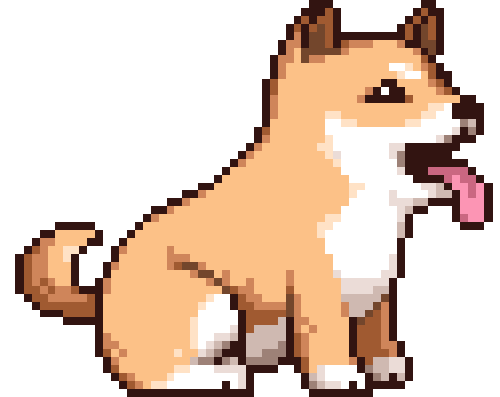

all about me
What is your name?
Sophie Shron
Where are you from?
Great Barrington, Massachusetts
When is your birthday?
April 24
Why did you choose to study Communication Design?
I love working digitally
What are you most inspired by?
Talented people
What has been your favorite class so far? Why?
/my freshman year studio class. I love how varied the work was.
What are you hoping to learn in this class?
Improve my coding and learn how to make interesting and functional websites.
What do you like to do in your spare time?
I also enjoy cooking and sewing.
When you imagine a graphic designer, what do you think they do on a day to day?
Always on a computer, working in an office with many other people.
When you imagine a developer, what do you think they do on a day to day?
Always on a computer, working in an office with many other people.
Where do you see yourself after graduating? What kind of job do you want to have?
I would love to start my own business/brand eventually.
Do you consider yourself an artist, a designer, both, or neither?
Both
What kind of design classes have you taken before this one?
Typography, accessory design, sewing, creative computing.
Do you know most of the students in our class already?
Yes
List your favorite typefaces.
Futura, Franklin Gothic, Playfair
What are you top 3 favorite colors?
Pink, Green, Purple
Which artists do you like?
Sol LeWitt, Eva Hesse, James Turrel
List out some music that you like to listen to
The Beatles, Red Hot Chili Peppers, Leon Bridges, Maggie Rodgers
Did anything interesting happen over winter break?
I stepped on my hand with an ice skate.
Have you ever built a website?
Yes
Do you have any questions for me?
Will we have an oppurtunity to make a personal website for ourselves (online portfolio)
What is your first memory of using the internet?
Yahoo Mail, online games, Club Penguin
Do you have a favorite place to visit?
My hometown
Do you speak any other languages?
I know some Spanish
What is your favorite food?
Burrito

What is your favorite animal?
Dog

Do you have a pet?
A three legged dog named Bridget
Is there any other information you’d like me to know?
I'm excited to improve my coding!